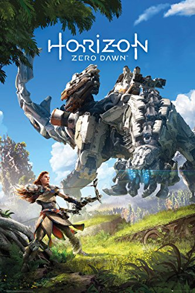

Examples of Games that are considered art

Dark Souls: Remastered
Journey

For over two decades, there has been debate over whether video games are an art or not. However, while this debate has raged, the games have proved themselves to be such. Examples include titles like Dark Souls, BioShock, Half-Life 2, Grand Theft Auto IV, Red Dead Redemption 2, Batman: Arkham City, Journey, God of War, Shadow of the Colossuss, Okami, Soma, Silent Hill 2, PT and much more!
As technology has advanced, so have video games, whether on PC, console, or mobile, gaming has evolved greatly, and the implemention of other arts such as music, film, and writing with the fusion of technology has enabled so much in the past twenty years! Furthermore, ever since the middle-late 90s, games have begun telling more complex and thoughtful narratives. Titles such as Metal Gear Solid (Konami), Half-Life (Valve), Grim Fandango (LucasArts/LucasFilm), Planescape: Torment (Interplay), and many more during this era all utilized various arts and software technologies to create experiences that simply weren't possible in any other medium.
As time continues to advance, we will see technology evolve further, and with the advent of things like ray-tracing, Vulkan + Proton (allowing even more people to play games), ARM, and more, the artistic side of gaming will continue to grow as more tech enables its growth.